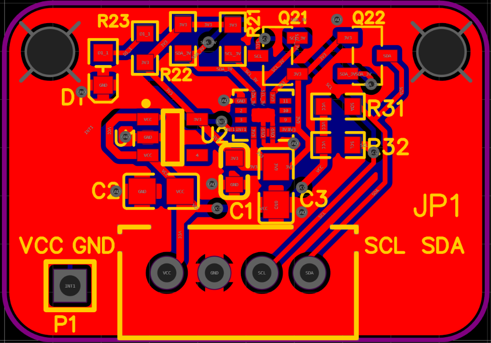

Apr 2026
Custom ISM330DLC IMU PCB
Designed a custom ISM330DLC IMU PCB from scratch in EasyEDA, integrating XH connectors for I2C and implementing noise reduction techniques including strategic decoupling capacitor placement, controlled trace widths, and a ground plane with minimal penetration. Developed for Triton Robotics' autonomous subteam.
PCB Design
EasyEDA
Embedded Systems